Early Letters · logo direction B
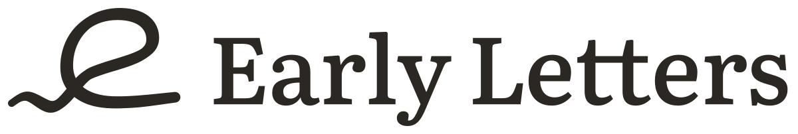
One pen stroke tells the whole product. A voice runs along the line, rises into a handwritten e, and leaves as an underline on the same line it came from.
Rationale
The symbol is one continuous stroke with three movements. It starts as a soft wave along the line, the sound of someone talking to {child}. The wave settles and lifts into a lowercase e written by hand, the first letter of the name and of every early letter. Then the pen comes back down and keeps going as an underline: the words stay where they were said.
Only the first movement is a wave. Everything after it is steady ink, which is the product's promise in one gesture: the machine never adds meaning, it only keeps what was said. The pen is drawn the way a real nib behaves, finer where the voice begins and fuller where it becomes writing.
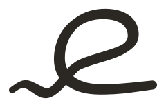
The system on paper
Ink #2B2722 for everyday use. Accent #8A5A3B, a sepia like fountain pen ink, for covers, gifts and the printed book.
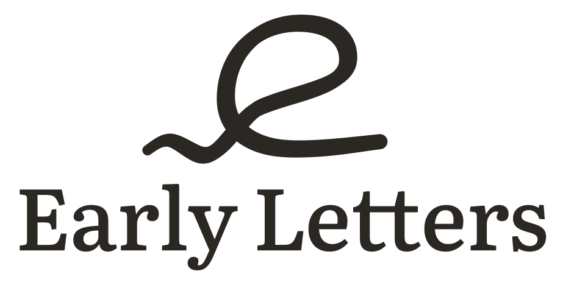
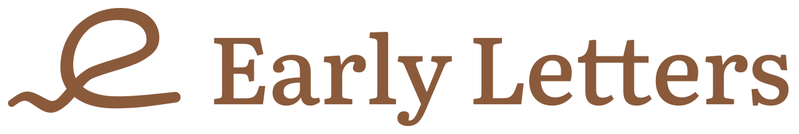
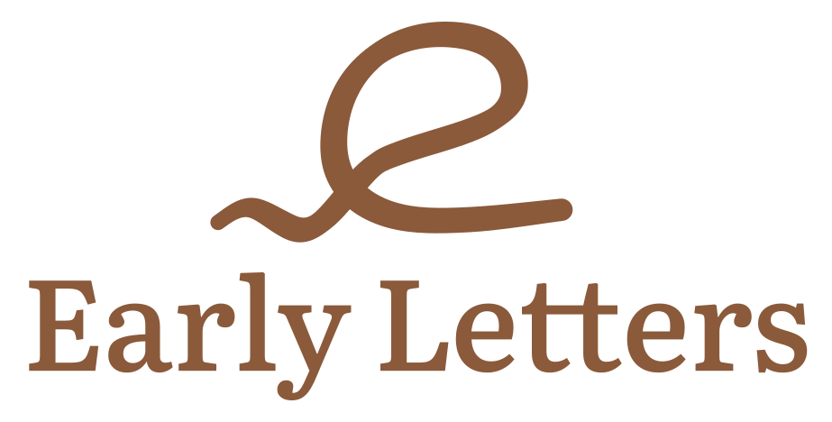
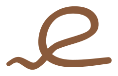
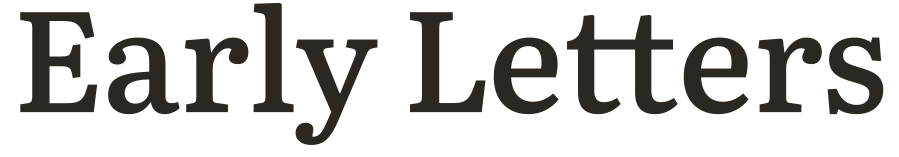
The system at night
The app is tuned for 2 a.m. first, so the reversed marks are first-class: paper ink #F2ECE4 and accent #D9A47E on #161412.
Sizes
Three optical sizes from one drawing. favicon (16 to 24px) is drawn on the pixel grid: a 2px pen, the line snapped to whole rows, the e 12 percent taller so its eye stays open. symbol-small (24 to 40px) has a heavier, even pen and a wider wave. symbol (48px up) has the full pen. Bottom row: actual 16 and 32px renders, magnified 8x and 4x with no smoothing.
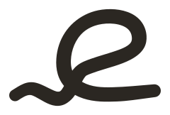
Construction
Centreline (dashed, square nodes): nine hand-placed cubic curves, three for the voice and six for the letter and line. Every join has collinear handles, so the line never kinks.
Pen: a broad nib held at minus 35 degrees, with 24 percent contrast, so down-strokes are fuller than up-strokes, the way handwriting looks. The wave starts at 70 percent weight and grows to full ink as it becomes the letter.
Outline (round nodes): the pen is expanded and refitted to 47 cubic nodes, then shipped as a single filled path. No strokes, so it scales the same in every renderer, email client and print RIP.
Optical corrections: every turn's radius was checked against the pen's half-width so inner curves never pinch; the eye of the e turns in one long curve; the upstroke leaves the line early so it crosses the bowl as a clean X; the underline rises 3 percent and thins slightly at the end, where a pen lifts.
Rebuild: npx tsx packages/brand/assets/logo/b/src/build.ts then python3 packages/brand/assets/logo/b/src/render.py.
Wordmark
Literata 500, the product's display serif, outlined from the OFL font so the wordmark never depends on a font being installed.
One bar for tt. The two t's in Letters share a single crossbar, written in one movement, the way letters join when someone writes by hand. It is the only ornament, and it echoes the symbol without copying it.
Spacing: tracked in 0.4 percent and kerned pair by pair for display sizes (Ea, ly, y and L, Le, rs), so the name reads as one word group rather than set type.
In use
Mock only; the real header and footer belong to B3 and D1. The lockup sits on paper, 176px wide, left aligned with the body text.
Tap the button on this phone to open the memory book.
Sign inOn another device? Enter this code instead.
Did not ask for this? You can ignore it.
Tap the button on this phone to open the memory book.
Sign inOn another device? Enter this code instead.
Did not ask for this? You can ignore it.
In use
Primary: paper writing on sepia, like the cover of a cloth-bound book; it holds its own on light and dark wallpapers. Dark appearance: sepia on night. Alternate (png/app-icon-paper-1024.png): ink on paper. Other icons are neutral placeholders.
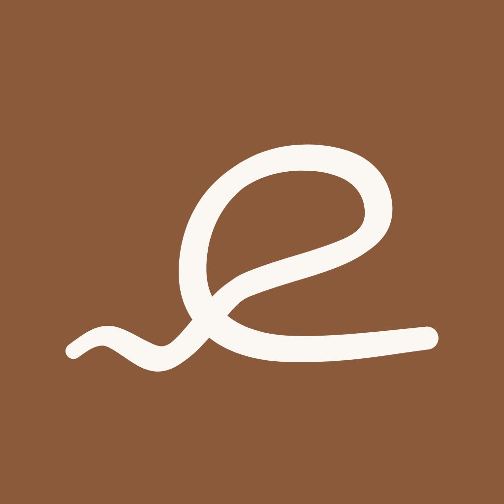
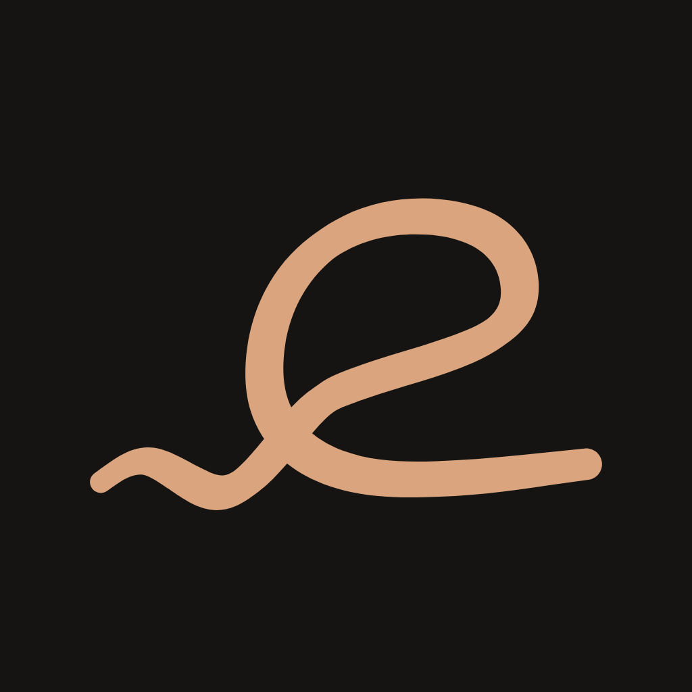
Use
Clear space on every side: the cap height of the E. For the symbol alone: a quarter of its width.
| Asset | Minimum |
|---|---|
| lockup-horizontal | 120px wide on screen, 30mm in print |
| lockup-stacked | 96px wide, 24mm |
| symbol | 48px wide, 12mm; below that use symbol-small |
| symbol-small | 24px; on a book spine at 8mm and up |
| favicon | 16px only |
Files
| File | What |
|---|---|
| symbol*.svg, symbol-small*.svg | The mark, master and small optical size, in ink, reversed, accent, accent-reversed |
| wordmark*.svg | Outlined Literata 500 wordmark with the joined tt |
| lockup-horizontal*.svg, lockup-stacked*.svg | Symbol and wordmark on a shared baseline |
| favicon.svg | Micro cut on a 16px grid, swaps to paper ink when the browser is in dark mode |
| app-icon-1024.png | iOS App Store icon, paper on sepia, opaque RGB, no alpha, square corners (iOS masks it) |
| png/ | Transparent PNG renders, favicons 16/32/48, apple-touch-icon 180, dark and paper app icon alternates |
| src/ | build.ts (geometry, type outlining, composition), geometry.mjs (pen expansion and curve fitting), render.py |
| LICENSE-NOTES.md | SIL OFL 1.1 notes for Literata (outlined into the wordmark) and the fonts used on this page |